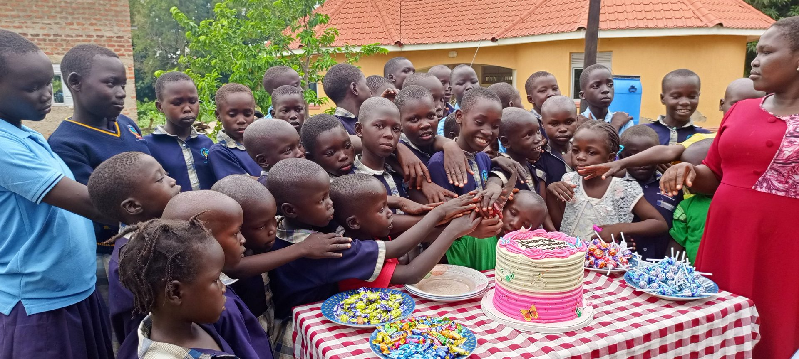

Exodus 2:9 · “Take this child and nurse him for me”
Releasing children from poverty, in Jesus’ name.
Biyaya Child Development Centre (Biyaya CDC) is an official church project of St. Luke Church of Uganda, Adjumani — established 2019, walking with vulnerable children through education, health and holistic Christ-centred care.
Founded
Ages served
Care radius
Diocese audited

“Biyaya CDC was birthed out of a profound spiritual call to give back to our community. We serve the most vulnerable children within Adjumani District through holistic guidance — and every donation is securely held at Equity Bank, released only after strict internal verification and committee approval.”
Holistic transformation, one child at a time
Every sponsorship and gift is channelled into five core areas set out in our constitution — each tracked, reported and available for your review.
Educational Sponsorship
Scholastic materials, fees support and mentorship so children can stay in school and thrive.
Health Campaigns
Community health outreach and support for children who are chronically ill and lack family medical cover.
Life Skills Education
Practical, age-appropriate training that builds confidence, resilience and future self-reliance.
Economic Empowerment
Equipping guardians and caregivers with tools toward sustainable household income.
Moral & Spiritual Development
Christ-centred mentorship carrying out Jesus’ mission of teaching, leading and discipleship.
Browse the Sponsorship Catalog
Meet children currently awaiting a sponsor and see their designated core need.
Every shilling is accounted for — and we can show you how
Biyaya CDC operates under the Church of Uganda governance framework, with layered financial checks built into our constitution.
- ✓ Overseen by the serving Parish Priest of St. Luke Church of Uganda
- ✓ Three-signatory control: Chairperson, Secretary & Treasurer
- ✓ Externally audited annually by the Madi and West Nile Diocese
- ✓ Funds held in trust at Equity Bank, Adjumani Branch
Audited
Annually
- Account name
- Biyaya Child Development Centre
- Bank
- Equity Bank
- Branch
- Adjumani
- Signatories
- Chairperson · Secretary · Treasurer
- Supervising entity
- St. Luke Church of Uganda
- External audit
- Madi & West Nile Diocese
Children currently awaiting a sponsor
Full names and photographs are published only once guardian consent and registration are complete, per our Child Protection Policy. Profile identifiers below are placeholders illustrating the catalog layout.
Partner with us in Adjumani District
Whether through a monthly Partner Circle gift, a one-time offering, or prayer — your obedience becomes a child’s transformation.